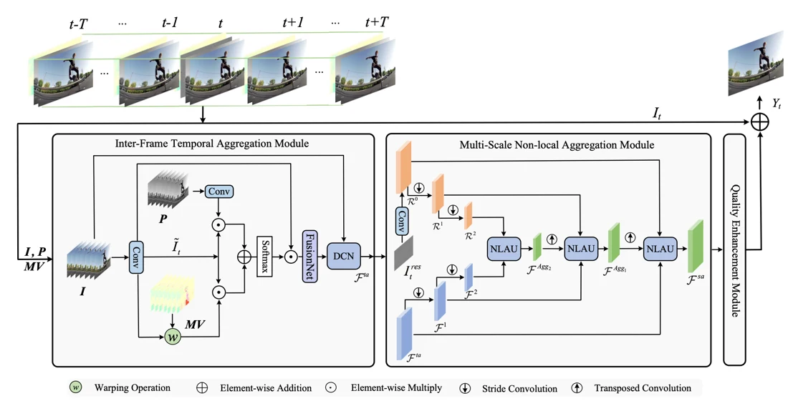

Compressed video contains more than the visible frames. Coding priors such as motion vectors and residuals carry information about temporal changes and spatial detail. Many enhancement approaches leave these signals unused.
压缩视频包含的信息不仅是可见帧。运动矢量、残差等编码先验也携带着时间变化与空间细节，而许多增强方法并未充分利用这些信号。
CPGA treats compression metadata as evidence about the video rather than information to discard after decoding. The method uses those clues to decide what to aggregate across frames and within an image.
CPGA 将压缩信息视为有关视频的证据，而非解码后即可丢弃的数据，用它来引导跨帧及帧内的信息聚合。
Using information already inside the bitstream利用码流中已有的信息
CPGA introduces an inter-frame temporal aggregation module that combines consecutive frames with coding priors. A multi-scale non-local aggregation module uses residual frames to guide spatial aggregation. The method therefore draws on both the decoded video and information already embedded in its compressed representation.
CPGA 的帧间时间聚合模块结合连续帧与编码先验，多尺度非局部聚合模块则利用残差帧引导空间信息融合。因此，该方法同时利用解码视频和压缩表示中已有的信息。
Motion vectors provide a compact account of where information is expected to move between frames. Residuals identify what the prediction did not explain. These signals are complementary: one helps temporal alignment, while the other highlights spatial detail that needs reconstruction. CPGA uses them inside aggregation rather than attaching them only at the final output, allowing the priors to shape how neighboring evidence is gathered.
运动向量提供帧间信息预计如何移动的紧凑描述，残差则指出预测未能解释的内容。两类信号互补：前者帮助时间对齐，后者提示需要恢复的空间细节。CPGA 将它们用于聚合过程，而非仅附加在最终输出上，使先验能够影响周围证据的收集方式。
{kind=link}

Separating temporal and spatial contributions区分时间与空间聚合的贡献
The evaluation uses standard compressed-video sequences under both low-delay B and random-access configurations, with several quantization parameters. Average PSNR and SSIM are paired with temporal quality-fluctuation analysis. Ablations test the contribution of coding priors and aggregation modules. This distinguishes gains from additional bitstream information from gains obtained solely by increasing the capacity of a pixel-based enhancement network.
评测在低延迟 B 与随机访问两类配置下使用标准压缩视频序列，并覆盖多个量化参数。平均 PSNR、SSIM 之外，还分析时间上的质量波动。编码先验与聚合模块的消融用于区分：收益究竟来自新增码流信息，还是仅来自像素增强网络容量的增加。
What coding priors add to enhancement编码先验为增强带来了什么
The work introduces VCP, a dataset of 300 videos with bitstream-derived coding priors. On 18 standard sequences under the LDB configuration at QP=37, CPGA improves average PSNR gain by 0.03 dB over STDR and 0.08 dB over RFDA. The benefit depends on access to motion vectors and residuals, which are not available from decoded RGB frames alone.
论文构建了包含 300 段视频及码流先验的 VCP 数据集。在 18 条标准序列、LDB 配置和 QP=37 下，CPGA 的平均 PSNR 增益比 STDR 高 0.03 dB，比 RFDA 高 0.08 dB。方法需要运动向量和残差等信息，不能仅从解码后的 RGB 帧直接获得这些先验。
Restoration beyond decoded pixels让复原超越解码像素
A codec has already estimated motion and separated predictable content from residual detail. CPGA treats that work as reusable evidence for reconstruction. The practical question becomes where to connect the enhancer to a decoding pipeline. If only a final RGB video is available, access to the exact priors is lost, and the same architecture cannot simply be assumed to retain its reported advantage.
编码器已经估计了运动，并分离可预测内容与残差细节。CPGA 将这些工作视为可复用的重建证据，因此实际部署需要考虑增强器应接入解码流程的哪个位置。若只能取得最终 RGB 视频，就失去了准确先验，不能直接假定相同架构仍保持论文中的优势。
Paper & authors论文与作者
CPGA: Coding Priors-Guided Aggregation Network for Compressed Video Quality Enhancement ↗
Cite this work
@inproceedings{zhu2024cpga,
title = {CPGA: Coding Priors-Guided Aggregation Network for Compressed Video Quality
Enhancement},
author = {Qiang Zhu
and Jinhua Hao
and Yukang Ding
and Yu Liu
and Qiao Mo
and Ming Sun
and Chao Zhou
and Shuyuan Zhu},
booktitle = {Proceedings of the IEEE/CVF Conference on Computer Vision and Pattern
Recognition},
year = {2024},
url =
{https://openaccess.thecvf.com/content/CVPR2024/papers/Zhu_CPGA_Coding_Priors-Guided_Aggregation_Network_for_Compressed_Video_Quality_Enhancement_CVPR_2024_paper.pdf}
}